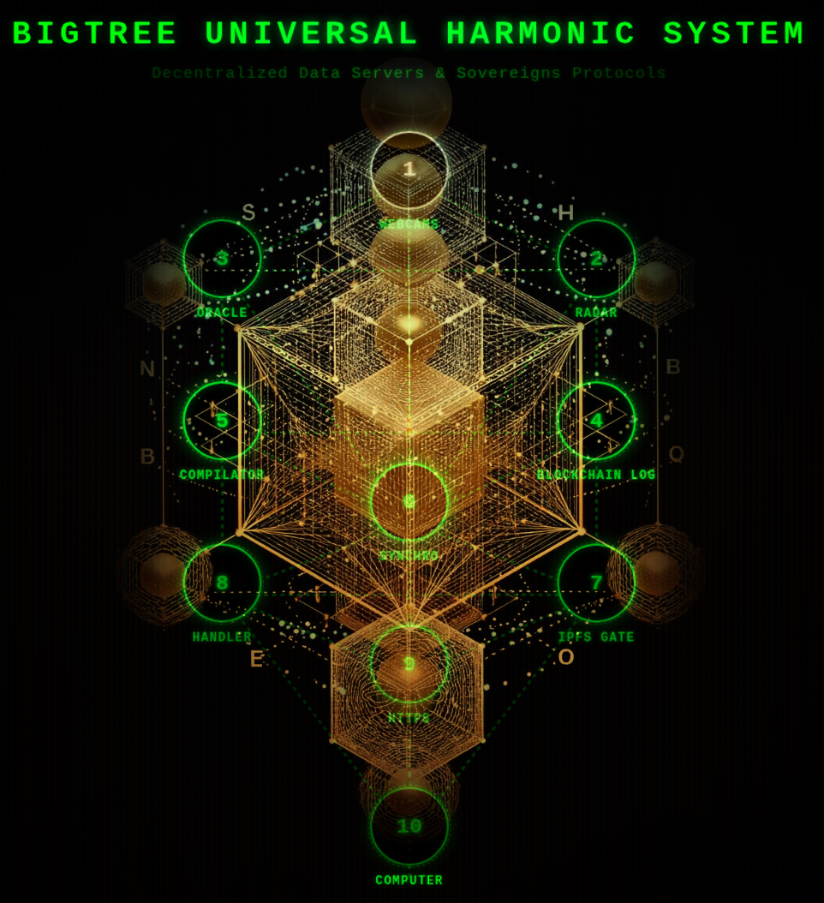

The BUHS L1 protocol relies on a zero-trust, zero-knowledge, client-side audit model. Rather than asking you to blindly trust our servers, the application exports raw cryptographic proofs directly into your browser. Your local machine independently recalculates the mathematics to verify data integrity, chronological continuity, and absolute timestamping[cite: 8].
This verification rests on three foundational cryptographic pillars[cite: 8]:
At the granular level, every transaction or file registered in the protocol is compressed into a unique, immutable cryptographic footprint called a Leaf Hash[cite: 8].
To verify a transaction, your browser takes the original raw inputs—the precise nanosecond timestamp (nano_time), the transaction identifier (uuid), the execution context (pipeline_id), and the local SHA-256 fingerprint of your file (file_sha256)—and concatenates them into a single byte stream[cite: 8]:
recomputedLeaf matches proofData.transaction.leaf_hash down to the exact bit, it provides absolute mathematical certainty that neither the file content nor its metadata has been modified since creation[cite: 8]. Given SHA-256’s collision resistance (2-256 probability of a random match), forging this proof is computationally impossible[cite: 8].
Individual transactions are aggregated into a daily Merkle Tree (Day_Merkle)[cite: 8]. To prevent any historical tampering, rewriting, or deletion of past events, the daily ledger is chained to the previous day's state via a deterministic cryptographic seal[cite: 8]:
Parent_Root and Day_Merkle, then computes their combined hash[cite: 8]. If SHA256(Parent + Day) == Sealed_Root, it proves unbroken historical continuity[cite: 8]. Modifying a single past transaction would invalidate the entire downstream chain of seals, making secret ledger alteration mathematically detectable[cite: 8].
To guarantee that a transaction existed at a specific point in real-world time, the protocol extracts timestamp proofs (.ots files) broadcasted over the decentralized Nostr network[cite: 8].
.ots file contains a cryptographic path of sequential hashes culminating in a hash commitment embedded directly inside a physical Bitcoin block[cite: 8]. Because altering a confirmed Bitcoin block requires overcoming the aggregate proof-of-work of the entire Bitcoin mining network, this offers an indisputable Proof of Existence: it mathematically demonstrates that your file existed prior to the mining of that specific Bitcoin block height[cite: 8].
async function buildMerkleRootLocally(leaves) { if (!leaves || leaves.length === 0) return null; if (leaves.length === 1) return leaves[0]; let currentLevel = [...leaves]; while (currentLevel.length > 1) { const nextLevel = []; for (let i = 0; i < currentLevel.length; i += 2) { if (i + 1 < currentLevel.length) { // Concaténation et hachage des paires : SHA256(Node_A + Node_B)[cite: 8] const combinedHash = await sha256Hex(currentLevel[i] + currentLevel[i + 1]); nextLevel.push(combinedHash); } else { // Gestion du nombre impair de feuilles (duplication de la dernière feuille)[cite: 8] const combinedHash = await sha256Hex(currentLevel[i] + currentLevel[i]); nextLevel.push(combinedHash); } } currentLevel = nextLevel; } return currentLevel[0]; // Renvoie le Day Merkle recalculé[cite: 8] }
// 4. RÉCUPÉRATION DU JOURNAL DU JOUR ET DES FEUILLES[cite: 8] const isoDateStr = proofData.transaction.nano_time.split('T')[0]; const journalUrl = `https://xylem.bigtreeconnection.com/page-${isoDateStr}.html`; addLogLine(`Appel du registre public pour la date : ${isoDateStr}...`, 'console-warning'); const response = await fetch(journalUrl); if (!response.ok) throw new Error(`Registre public introuvable (${journalUrl})`); const htmlText = await response.text(); const parser = new DOMParser(); const doc = parser.parseFromString(htmlText, "text/html"); // Extraction de la racine inscrite sur la page[cite: 8] const dayMerkleFromRegistry = doc.querySelectorAll('.box p')[1].querySelector('span.select-all').innerText.trim(); const parentRoot = doc.querySelectorAll('.box p')[2].querySelector('span.select-all').innerText.trim(); const sealedRoot = doc.querySelectorAll('.box p')[3].querySelector('span.select-all').innerText.trim(); // Extraction de la liste complète des leaf_hash du jour[cite: 8] const rawLeavesElements = doc.querySelectorAll('.leaf-item'); const allLeavesOfDay = Array.from(rawLeavesElements).map(el => el.innerText.trim()); // A. Vérification de présence de la feuille[cite: 8] if (allLeavesOfDay.length > 0 && !allLeavesOfDay.includes(proofData.transaction.leaf_hash)) { addLogLine("🚨 ÉCHEC : La feuille de la transaction n'existe pas dans le registre du jour !", "console-error"); return; } // B. APPEL DU MERKLE BUILDER LOCAL[cite: 8] addLogLine("Reconstruction locale de l'Arbre de Merkle via le client...", "console-warning"); const recomputedDayMerkle = await buildMerkleRootLocally(allLeavesOfDay); if (recomputedDayMerkle && recomputedDayMerkle !== dayMerkleFromRegistry) { addLogLine("🚨 ÉCHEC : Le Day Merkle calculé localement ne correspond pas au registre !", "console-error"); return; } addLogLine("✔ Reconstruction de l'arbre de Merkle réussie en local.", "console-success"); // 5. VÉRIFICATION DU SCELLÉ : SEALED = SHA256(PARENT + DAY)[cite: 8] const computedSealed = await sha256Hex(parentRoot + dayMerkleFromRegistry);